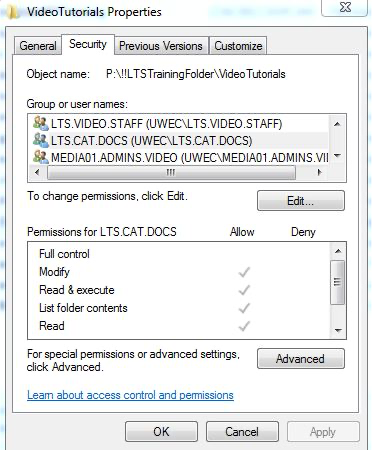
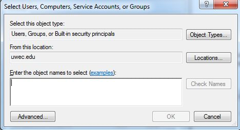
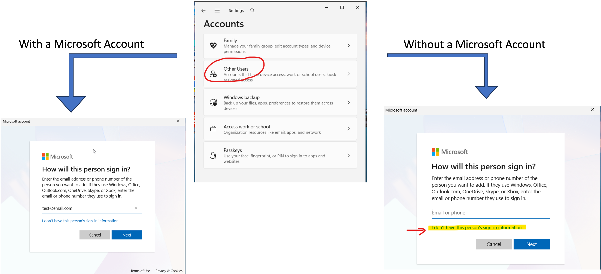
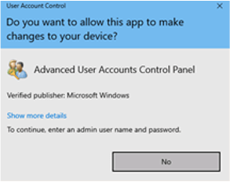
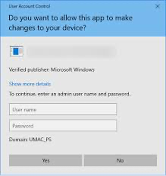
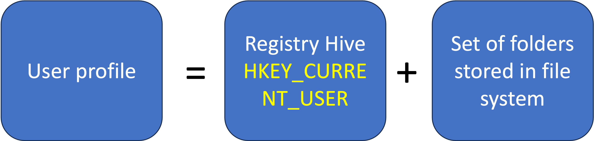
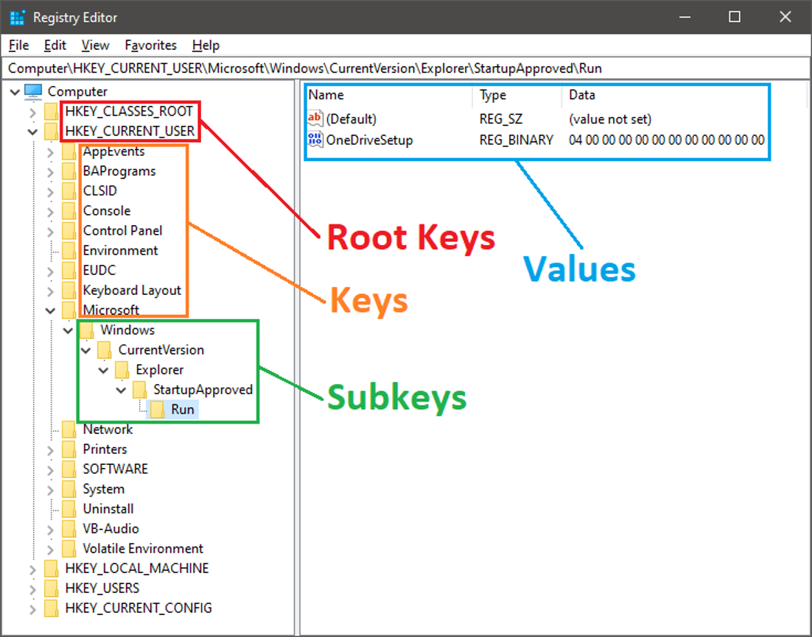
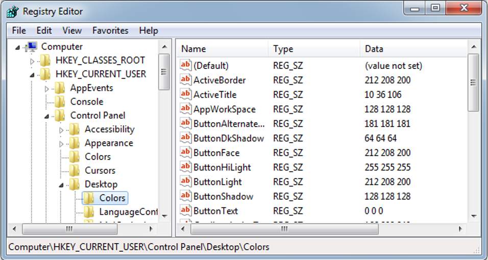

Permissions and User Profiles
Adapted from the original slides with the help of Claude AI for restructuring.
File Permissions
File properties
The Properties tab of files and folders in Windows lets you configure permissions for different users or groups of users.

NTFS permissions
Click Edit to change permissions. These are the NTFS permissions:
| Permission | What it allows |
|---|---|
| Full Control | Everything |
| Modify | Everything except taking ownership |
| Read and Execute | View files and run apps |
| List Folder Contents | View folders, but not access files |
| Read | Open and view files |
| Write | Create folders and files, and edit them |

Adding a user
- Click the Edit button; this opens a new window.
- Click Add, then type the name of the user (e.g.
FrenchUser), or click Advanced → Add to find the user.

User Profiles
What is a user profile?
- A user profile is created the first time a user logs into a computer.
- On later logins, the system loads the user’s profile and configures the computer environment according to the information stored in it.

C:\Users.Adding another user on Windows 11
Since Windows 8, Microsoft has favoured Microsoft Cloud accounts over creating local accounts (only existing on the PC). Cloud accounts require a login using an email and password from a valid Microsoft platform such as Outlook.com, Live.com, Hotmail.com or a school/work Microfot 365 account. Altough most editions of Windows 11, push for using a cloud account when first installing Windows (OOBE screen, forcing a login), it’s still possible to create local account:
Officially, there are two ways to add a user in Windows 11: with a Microsoft account or without one.

Source: How to Create a Local or Offline Account in Windows 11 or Windows 10
User account with a Microsoft account
- Uses features such as synchronization across devices.
- Gives access to Microsoft services such as Office 365, OneDrive, etc.
- Requires Internet access.

Local user account (without a Microsoft account)
- Creates a user account only on this particular machine.
- All Windows machines have a built-in local administrator account used for troubleshooting.
- This can also be done via Computer Management (
Win + R, typecompmgmt.msc). - Or via the command prompt:
net user <username> <password> /add
- Start → Control Panel
- User Accounts → Manage another account
- Add a user account: French User
- Using a Microsoft account
- Without a Microsoft account
- Add a second user account: Big Boss
- Without a Microsoft account
- Select the newly created account and change the account type to Local Administrator.
- Run CMD with admin permissions
- Type the command above to add a third user.
User account types
| Administrator | Standard |
|---|---|
| Administrators are “super users” with full control of a computer. They can install or modify software and access any file. | Have partial control over a computer. For example, they can only install apps and software within their local user directory. |
| They can add other users and change their user types. | They cannot install system-wide applications or access other users’ files. |
Administrator account required


What is a user profile made up of?
User profile = Registry hive (HKEY_CURRENT_USER) + a set of folders stored in the file system

Types of user profiles

| Profile | Description |
|---|---|
| Local | Localized to this specific machine. |
| Roaming | Downloads the settings from the main server onto any PC logged into within the network. Example: your John Abbott school account. |
| Mandatory | Administrators can create mandatory user profiles with settings for users. |
| Temporary | Created if an error prevents the user profile from loading. Deleted automatically at the end of each session. Example: an account at a computer in a public library. |
Registries
What is the registry?
The Windows registry is a hierarchical database that stores configuration settings and options for the Microsoft Windows operating system and installed applications.

Windows Registry
Computer technicians should:
- Understand basic Registry components,
- Know how to edit the Registry manually,
- Know the best way to locate a particular setting.
Accessing the Registry
- To access the Registry, type
regeditin the Start (⊞ Win) search bar. - The Registry is organized in a tree structure, similar to folders in a file system.
- It shows keys (or subkeys) on the left and values on the right.
Five main root keys
| Root key | Description |
|---|---|
HKEY_CLASSES_ROOT |
Historically defined the standard class objects used by Windows. Now provides backwards compatibility for older applications. |
HKEY_CURRENT_USER, HKEY_USERS |
Store personalized information for each user with an account on the system, such as desktop colours, screensavers and desktop contents. |
HKEY_LOCAL_MACHINE |
Contains all the data for the system’s non-user-specific configuration. This covers every device and every program on your computer. |
HKEY_CURRENT_CONFIG |
If values in HKEY_LOCAL_MACHINE have more than one option (e.g. two different monitors), this root key defines which one is currently being used. |
Using Registry Editor
- When you use the Registry Editor, you risk breaking things.
- Applications might not start, utilities may not work, or your computer may not boot.
- Always back up the Registry (preferably to a thumb drive) before you change anything. After making the change, reboot to see if it had the desired effect. If not, restore the old settings from your backup.
- To save a copy of the Registry: export the full registry, or a single key or subkey (with all subkeys and values under it), using File → Export.
- The backup is saved with the extension
.reg. - To restore backed-up keys: use File → Import, or right-click the
.regfile and select Merge.


- Press Windows key + R to open the Run dialog box.
- Type
regeditand press Enter to open the Registry Editor. - Navigate to
HKEY_CURRENT_USER\Control Panel\Colors. - Find the Hilight value in the right-hand pane. It controls the highlight colour of selected items.
- Double-click Hilight to open its properties.
- In the Value data field, enter the RGB value of the colour you want. For example, for light blue enter
192 217 255. - Click OK to save the changes.
- Close the Registry Editor.
More registry hacks: https://www.minitool.com/backup-tips/windows-10-registry-hacks.html
Other OS Maintenance Tasks
Updates to the OS and applications
- A service pack is a collection of updates, fixes or enhancements to a software program, delivered as a single installable package. It may add new OS features as well as bug fixes, security enhancements, etc.
- Service packs are commonly issued within the first two years after a product’s release, and are usually numbered (e.g. SP1, SP2).
- Note: Microsoft recommends never being more than two service packs behind.